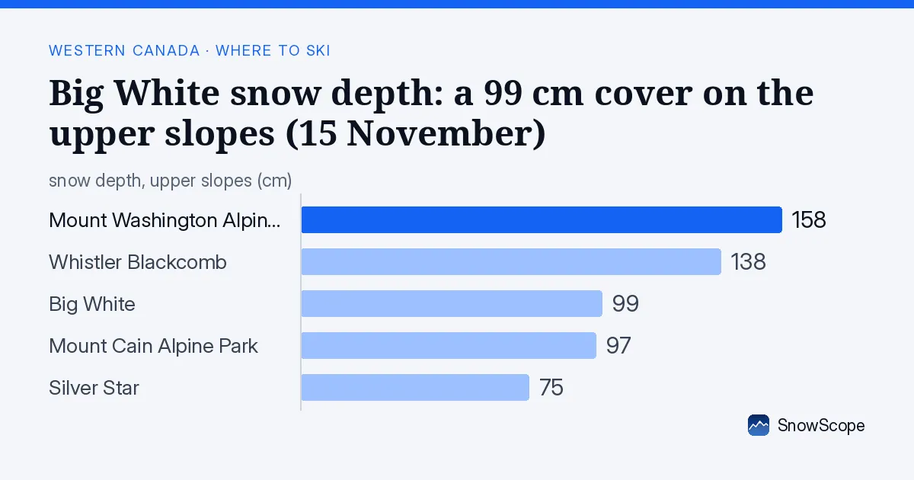
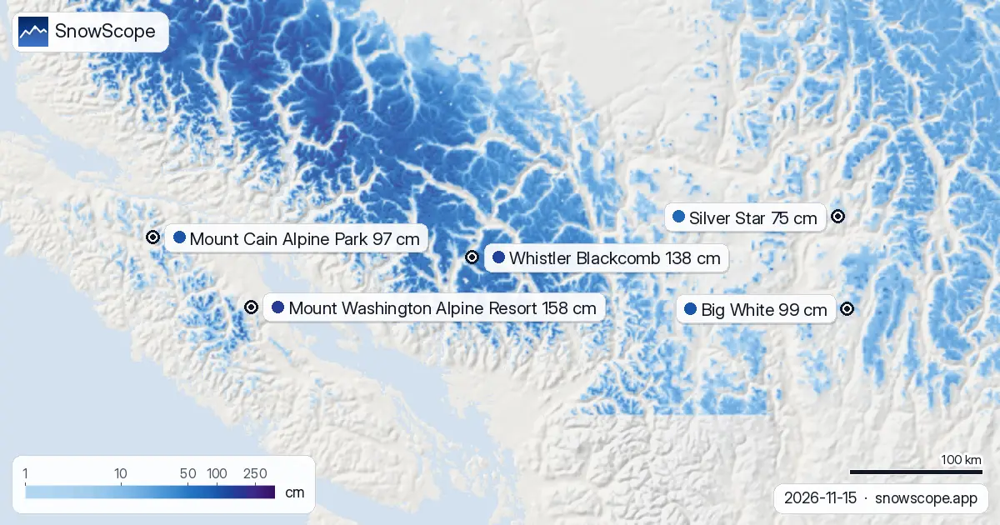

Big White shows the starkest height gradient: 68 cm at the summit
Big White presents one of Western Canada's most extreme snow distributions, with 68 cm of modelled snow concentrated at the summit while the base 1512 metres below remains snowless. This radical vertical gradient, measured on 15 November, reflects early-season precipitation patterns governed by the freezing level—the threshold altitude where air temperature transitions below zero and precipitation falls as snow rather than rain.
See the live snow forecast for Big White in the SnowScope appSnow depth, powder alerts and the 3D map, free.
The extreme height divide
The snow distribution at Big White on 15 November tells a stark story of altitude-dependent precipitation. Upper slopes average 99 cm of modelled snow depth, yet this conceals a severe vertical compression: meaningful accumulation exists only at high elevation. At the summit (2271 metres), the snowpack reaches 68 cm; at the base (1512 metres), it vanishes entirely.
From a hydrological perspective, this concentration matters profoundly. The region's freshwater storage is confined to high elevations, far from the lower catchments and reservoirs that will eventually depend on this snow's spring melt. A mountain this vertically divided represents stored water in a form that cannot quickly feed lower-elevation systems.
| Resort | Snow depth | New snow, 72 h | Coming, next days | Top |
|---|---|---|---|---|
| Mount Washington Alpine Resort | 158 cm | 9 cm | 11 cm | 1,569 m |
| Whistler Blackcomb | 138 cm | 82 cm | 13 cm | 2,259 m |
| Big White | 99 cm | 4 cm | 4 cm | 2,271 m |
| Mount Cain Alpine Park | 97 cm | 66 cm | 9 cm | 1,616 m |
| Silver Star | 75 cm | 5 cm | 3 cm | 1,886 m |

Regional standing
Across Western Canada, 41 of 57 resorts held measurable snow on 15 November, with the region's total snow-covered area reaching 253,880 square kilometres. Whistler Blackcomb leads regionally with 138 cm on its upper slopes; Mount Washington Alpine Resort reaches 158 cm—both substantially larger volumes than Big White's 99 cm average.
Yet neither competitor displays Big White's defining characteristic: a snow-free lower mountain beneath deep upper slopes. The vertical segregation of snow here is a distinguishing pattern, one that few resorts in the region currently exhibit.
Why the freezing level creates this divide
The freezing level—the altitude where air temperature crosses 0 °C—determines whether precipitation falls as snow or rain. On 15 November, it ranged between 1500 and 1880 metres at Big White, meaning the base and much of mid-mountain remained above freezing whilst the upper slopes stayed cold enough to preserve solid snow.
This boundary governed the 1 cm of fresh snow that fell in the 24 hours to 15 November, as well as the 4 cm that accumulated over the preceding 72 hours. Both storms deposited their snow only where air temperatures could sustain it in frozen form.
Forecast: the threshold date approaching
Over the next seven days, Big White will receive approximately 4–5 cm of additional snow across the mountain, with the heaviest falls expected on 16 November. Far more significant is the forecast trajectory of the freezing level.
By 18 November, our model predicts the freezing level will plummet to between 210 and 380 metres—well below the base at 1512 metres. This dramatic descent means snow will fall across the entire mountain for the first time this season, eventually bridging the current void between base and summit. Until that transition occurs, skiers will find reliable coverage only at higher elevations, whilst the thin mid-mountain layer remains vulnerable to wind erosion and sublimation.
Reading thin early-season terrain
The concentration of snow at altitude means lower and mid-mountain slopes remain largely bare to thinly covered. Early-season snowpacks are characteristically thin, and surfaces exposed to wind and solar input can quickly sublimate or compress further.
The modest cover currently present offers minimal buffer against the mountain environment. Rocks and vegetation likely lie close beneath the surface in many locations below mid-mountain (1891 metres). Before accessing steep untracked terrain in the upper elevations, skiers should consult the official avalanche bulletin for the region to assess wind-slab stability and other hazards.
Tips for skiers
- Focus your ski day on the summit zone (2271 metres) where 68 cm of modelled snow provides the most reliable turning conditions; expect bare slopes below mid-mountain (1891 metres).
- Mark 18 November as a threshold: the forecast freeze-level drop on that date will bring snow to lower elevations and fundamentally alter the mountain's accessibility.
- Treat all terrain below 1891 metres as rock-hazard exposure; thin snow conceals obstacles and provides minimal safety cushion.
- Monitor freeze-thaw responses on exposed aspects; thin mid-mountain snow responds dramatically to even small temperature swings within a single day.
- Before venturing into untracked steep terrain at higher elevations, consult your region's official avalanche bulletin to assess wind-slab risk and layer stability under current conditions.
About these numbers
Resort snow depths are the deepest snow on the resort's upper slopes from the SnowScope snow model (about 1 km, run of 15 November); they are estimates for an area, not a measurement at one point. Station values are measurements on the date shown. Forecasts can change. Always read the official avalanche bulletin before going off-piste.
Official avalanche bulletins: Avalanche Canada
Cite this report
For research, teaching or the press: the numbers and charts are free to reuse under CC BY 4.0 with this citation.
SnowScope (2026), Big White shows the starkest height gradient: 68 cm at the summit, https://snowscope.app/blog/en/2026/11/western-canada-big-white-snow-depth-today-15-november-2026.html, accessed 2026-11-15
SnowScope (Atlas Labs). (2026, November 15). Big White shows the starkest height gradient: 68 cm at the summit. SnowScope snow reports. https://snowscope.app/blog/en/2026/11/western-canada-big-white-snow-depth-today-15-november-2026.html
BibTeX
@misc{snowscope2026westerncanadabigwhitesno,
author = {{SnowScope (Atlas Labs)}},
title = {Big White shows the starkest height gradient: 68 cm at the summit},
year = {2026},
month = nov,
howpublished = {\url{https://snowscope.app/blog/en/2026/11/western-canada-big-white-snow-depth-today-15-november-2026.html}},
note = {Published 2026-11-15 18:22 UTC; accessed 2026-11-15}
}· CC BY 4.0 · Methods, data and tools →
Big White: snow and temperature by height, this winter vs last (tools) →
Follow Big White
Free: a message when fresh snow is coming, and the forecast every morning.
More snow reports

Whistler Blackcomb will receive 101 cm of new snow by November 25, far exceeding early-season norms. Mount Cain Alpine Park leads the region with 132 cm forecast.

Whistler Blackcomb saw 76 cm of new snow in the last 72 hours, with Mount Cain Alpine Park also receiving 64 cm, as of November 16, 2026.

Western Canada forecast: 90 cm new snow at Mount Washington in the next two weeks, with 70 cm expected in late November and early December. Model run 2026-11-18.